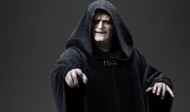

-
Darth
Vader -
Anakin
Skywalker -

Darth
Vader -
Darth
Vader -
Darth
Vader -
Darth
Vader -
Darth
Vader -
Darth
Vader -
Darth
Vader -
Darth
Vader
Darth Vader
Dark Lord of the Sith
Darth Vader, also known by his real name as Anakin Skywalker, is the central character in the first six episodes of the Star Wars saga. Also appears in Rogue One. The epic Star Wars shows his rise as a Jedi Knight, his transition to the dark side of the Force and his final redemption.
Father of Luke Skywalker and Leia Organa. The only character to appear in six episodes and the Rogue One spin-off In the Flesh
Character Information
- Homeworld: Tatooine
- Born: 41 BBY, Tatooine
- Died: 4 ABY
- Species: Human
- Gender: Male
- Height: 1.73 meters
- Mass: 136 kilograms
- Hair color: Gray and white
- Eye color: Yellow/red (dark side)
- Cybernetics: Prosthetic arms and legs, and a life-support system